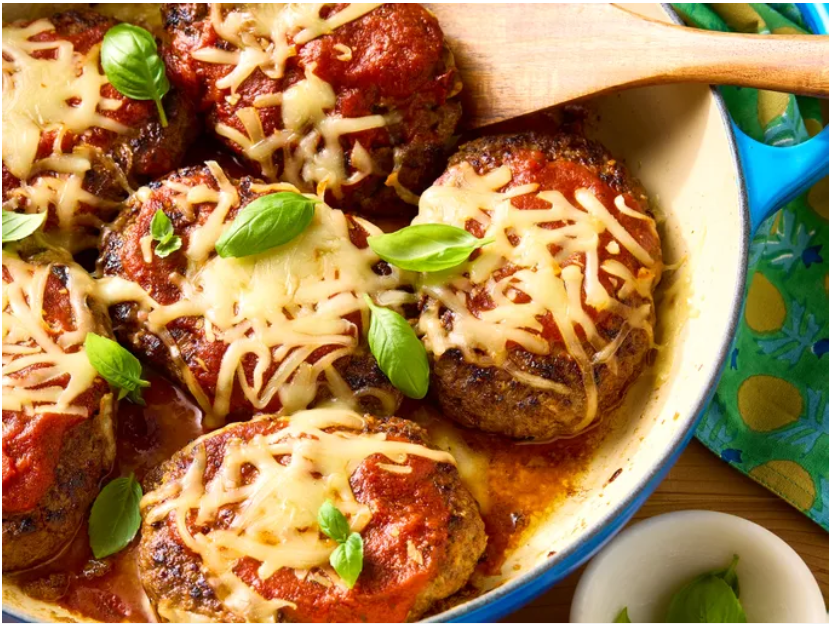

Home
Italian Hamburger Steaks

Photo by Brie Goldman : Food Styling: Annie Probst : Prop Styling: Kristin Schooley
Description
These Italian hamburger steak come out really nice and moist.
Serve with garlic bread and a crunchy salad. They will make
you think the burgers at restaurants are just paper food.
Ingredients
- 1 large egg
- 1/3 cup fine dry bread crumbs
- 1 cup marinara sauce, divided
- 1/3 cup grated onion
- 1 clove garlic, minced
- 1 teaspoon Italian seasoning
- 3/4 teaspoon salt
- 1/4 teaspoon crushed red pepper
- 1 1/2 pounds ground beef
- 1 tablespoon olive oil
- 1 cup shredded mozzarella cheese
- shredded fresh basil or chopped fresh parsley, for garnish (optional)
Steps
- Gather all ingredients. Preheat oven to 375 degrees F (190 degrees C)
- Beat egg lightly in a large bowl. Stir in bread crumbs. Add 1/3 cup marinara sauce, the onion, garlic, Italian seasoning, salt, and crushed red pepper; stir to combine. Add ground beef; mix lightly until combined.
- Shape into six oval patties that are 4-inches long and 1-inch thick.
- Heat oil in a 12-inch oven-going skillet over medium-high. Add patties to skillet. Cook until browned, 2 minutes on each side. Remove skillet from heat.
- Spoon remaining 2/3 cup marinara over the patties. Top with cheese.
- Bake in the skillet until cheese melts and patties are done when tested with an instant-read thermometer, (165 degrees F or 74 degrees C) about 15 minutes. Garnish with basil, if desired.
Home